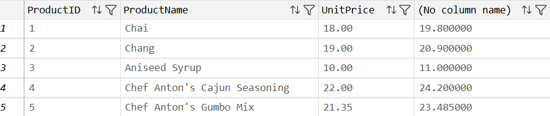
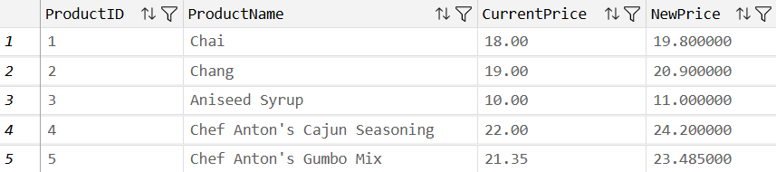

Transforming Data#
Introduction: What is a Data Transformation?#
In the previous sections, you learned how to retrieve existing columns from a database table using SELECT and how to filter rows using WHERE. However, raw database tables rarely contain data in the exact format required for executive reporting or financial analysis.
Recall a principle of database design from unit 2: store facts, not math. Relational databases store raw, immutable facts - such as the unit price of an item and the quantity ordered - rather than pre-calculated totals like line-item revenue or net profit. Storing calculated values in a database introduces risks to data integrity; for example, a change to a quantity without recalculating the total will create out of sync records.
Since storing calculated values violates best practices, anytime an analyst needs to compute a value from raw data, they perform a data transformation.
A transformation creates a calculated column. Transformations do not alter the underlying data; rather, they construct dynamic, temporary calculated fields in your query output.
In SQL, transformations are constructed in the SELECT clause using two primary tools:
Operators: Symbols (such as
+,-,*,/) that perform arithmetic or string concatenation directly on column values.Functions: Built-in programming routines (such as
DATEDIFF(),ROUND(),IIF(), orUPPER()) that accept input values, perform calculations, and return a result.
Example of a Transformation#
Say that Northwind Traders’ input costs have risen. This has depressed product margins and adversely affected the bottom line. To mitigate the effects of rising input costs, the marketing vice president has ordered a 10% across-the-board increase in prices. She wants you to list all products, their current prices, and their new prices. You can easily do this by running the following SQL query:
SELECT
ProductID,
ProductName,
UnitPrice,
UnitPrice * 1.10
FROM Products
The first five rows of the output are shown below:
{kind=link}

Fig. 6 Example of a Data Transformation#
In the output, the last column contains computed values. The data in this column is not in the database table Products. Instead, the data in this column was computed “on the fly” by SQL. Notice the line in the SELECT statement that reads Unit Price * 1.10. When SQL read that line, it took the value of UnitPrice in each row and multiplied it by 1.10 to create a new data value. This is a transformation.
The AS Keyword (Column Aliasing)#
When you apply an operator or function to create a new column, the database management system generates a result but does not automatically name the new column. In Visual Studio Code, the output header will simply read (No column name). You can see this in the figure above.
To give your calculated field a clear, professional header, use the AS keyword to assign an alias:
SELECT
ProductID,
ProductName,
UnitPrice AS CurrentPrice,
UnitPrice * 1.10 AS NewPrice
FROM Products
By writing UnitPrice * 1.10 AS NewPrice, we told SQL to use the name NewPrice for this column.
Notice that you can also use AS to change the label of an existing column. By changing the label on the UnitPrice column to CurrentPrice, we create output that clearly shows the current and future selling prices of the products. Assigning clear aliases is an essential coding practice that ensures your query output is readable and unambiguous.
{kind=link}

Fig. 7 Example of a Data Transformation with Aliases#
Transforming Data with Operators#
An operator is a symbol that acts on data values to perform a specific calculation. While you previously used comparison operators (=, >, <) and logical operators (AND, OR) in the WHERE clause to filter rows, you will typically use arithmetic operators and string operators to transform columns.
Programming Tip: All Available Operators
We will only cover a small subset of the available SQL operators. I chose the operators that I thought you would be most likely to use. For reference, here is a link to the official Microsoft SQL Server documentation; it lists and describes all available operators.
Arithmetic Operators#
SQL supports the standard arithmetic operators used in algebra:
Operator |
Operation |
Example Syntax |
What It Calculates |
|---|---|---|---|
|
Addition |
|
Sums two numeric values |
|
Subtraction |
|
Calculates the unit contribution margin |
|
Multiplication |
|
Calculates gross line-item revenue |
|
Division |
|
Calculates the average cost per unit |
Consider an example from Northwind Traders. The sales manager wants to evaluate line-item profitability across all historical transactions in the OrderDetails table:
SELECT
OrderID,
ProductID,
UnitPrice,
Quantity,
UnitPrice * Quantity AS GrossRevenue,
(UnitPrice * (1.0 - Discount)) * Quantity AS NetRevenue
FROM OrderDetails
In this single query, we extract raw facts (UnitPrice, Quantity, Discount) and compute two financial transformations: gross revenue before discounts and net revenue after applying percentage discounts.
Data Types#
Conceptually, a data transformation is simple. A formula or function is used to combine data from existing columns into a new column. However, there is a nuance to transformations that, if not fully understood, will lead to unexpected and invalid results. For example, if you divide 1 by 2 in SQL, the result will be 0, not 0.5. However, if you divide 1.0 by 2.0, the result will be the mathematically correct value of 0.5. This seemingly strange behavior is explained below.
These problems occur when SQL users lack an understanding of data types. In algebra or spreadsheets, a number is simply a number. In a relational database, however, every column is assigned a rigid data type. A data type defines the kind of data a column can store (e.g., whole numbers, decimals, currency, logical flags, dates, or text) and dictates which mathematical operations are valid.
Understanding data types is essential for accountants. When you write query calculations, combine columns, or clean raw financial records, knowing how SQL handles data types prevents logic errors, calculation bugs, and truncation mistakes.
Programming Tip: All Available Data Types
We will only cover a small subset of the available SQL data types. I chose the data types that I thought you would be most likely to use. For reference, here is a link to the official Microsoft SQL Server documentation; it lists and describes all available data types.
Integer Data Types (int, smallint, tinyint, bigint)#
An integer represents a whole number without any fractional or decimal component (positive, negative, or zero).
In T-SQL, integers are divided into four sub-types depending on the range of numbers they need to hold and the disk space required:
tinyint: Stores numbers from 0 to 255 (1 byte of storage).smallint: Stores numbers from -32,768 to 32,767 (2 bytes).int: The standard integer type, storing numbers from -2.14 billion to 2.14 billion (4 bytes).bigint: For massive datasets, storing whole numbers up to 9 quintillion (8 bytes).
Accounting Use Case: Integer fields are used whenever exact whole-number counting is required - such as physical inventory unit counts, journal entry line IDs, customer IDs, and transaction numbers.
The Integer Division Trap#
Because integer columns store strictly whole numbers, a critical trap arises when performing division: In SQL, dividing an integer by another integer always yields an integer result. SQL automatically truncates (discards) the entire decimal portion without rounding.
Consider the following division examples in SQL:
1 / 2evaluates to0(not0.5).86 / 100evaluates to0(not0.86).3 / 2evaluates to1(not1.5).
Imagine an auditor calculating a gross margin ratio using NetIncome / Revenue. If both underlying fields are stored as integers, SQL will return 0 for every transaction where revenue exceeds net income!
The Solution: To preserve decimal precision, at least one argument in a division expression must be evaluated as a floating-point or decimal number. You can force decimal precision by multiplying by 1.0 or adding a decimal point:
-- INCORRECT: Returns 0 due to integer division truncation
SELECT 1 / 2 AS Half;
-- CORRECT: Returns 0.5 by forcing floating-point evaluation
SELECT 1.0 / 2 AS Half;
-- OR
SELECT 1 / 2.0 AS Half;
Floating-Point Numbers (float) and the Need for Integers#
If integer division discards decimals, you might ask: Why not store every number as a decimal or floating-point number? Why bother with integers at all?
The answer comes down to exact representation. Computers store integers with 100% exact mathematical accuracy. Floating-point numbers (float), by contrast, use approximations to store numbers with fractional components.
Because floating-point math uses approximations, small representation errors can occur in temporary memory (for instance, an expression like 5.7 - 100.826 + 100.826 might evaluate in memory to 5.699999999999999).
While floating-point numbers (float) are suitable for scientific measurements and general statistical estimates, exact integer representation is mandatory when matching primary key IDs, counting physical warehouse inventory, or tracking account ledger line numbers.
Financial and Currency Data Types (money, smallmoney)#
Because floating-point numbers carry tiny approximation risks, enterprise accounting databases do not use float to store financial balances. Instead, relational databases use specialized fixed-precision currency types:
money: High-precision monetary data type storing values from -$922 trillion to +$922 trillion with accuracy to four decimal places ($0.0001).smallmoney: Compact monetary type storing values from -$214,748.36 to +$214,748.36.
Using money guarantees that monetary additions, subtractions, and ledger totals reconcile to the exact penny without rounding drift.
Logical / Boolean Data Type (bit)#
Not all business attributes represent monetary values or quantities; some represent simple yes/no values (e.g., Is a product active or discontinued? Is a customer credit account flagged? Has a invoice been posted?).
SQL represents true/false values using the bit data type:
1represents True (e.g., product is discontinued).0represents False (e.g., product is active, or not discontinued).
Date and Time Data Types (date, time, datetime2)#
Financial reporting cycles are inherently time-bound - monthly closes, quarterly filings, and fiscal year audits. T-SQL provides specialized data types to store dates and times:
date: Stores purely the calendar date (YYYY-MM-DD).time: Stores purely the time of day (HH:MM:SS.nnnnnnn).datetime2: The modern standard for combined date and time, storing timestamps down to fractional seconds with high precision.
Text Data Types (nvarchar, varchar, nchar, char)#
Beyond numbers, dates, and true/false values, databases store extensive textual information - customer names, street addresses, vendor descriptions, and audit notes.
Text data types (often referred to as strings) are categorized by length and character encoding:
Fixed vs. Variable Length (
charvs.varchar):char(n)always consumes n bytes of storage. For example, a field with data typechar(10)will always store 10 characters. The string'dog', which has length of 3 characters, will be stored in the database as'dog '. In other words, the database will “pad” the text with blank spaces.varchar(10)(variable character) dynamically adjusts disk space to fit the actual text length. Thus,varchar(10)can store up to 10 characters.Standard vs. Unicode (
nvarchar/nchar): Thenprefix stands for National / Unicode. Standardvarcharstores basic Latin characters.nvarcharstores international character sets (including accents, non-Western alphabets, and special symbols), ensuring corporate databases handle global vendor and customer names accurately.
Data Type Precedence#
What happens when an arithmetic calculation combines columns of different data types, such as multiplying UnitPrice (type money) by Quantity (type smallint)?
SQL handles mixed-type expressions by using data type precedence. SQL ranks all data types in a strict hierarchy. When an expression combines two different types, SQL automatically converts the lower-precedence type (smallint) into the higher-precedence type (money) before executing the math. The result will always be of the higher-precedence type. This ensures the output retains full financial precision.
Following is a subset of the data type precedence hierarchy.
datetime2datetimefloatmoneysmallmoneybigintintsmallinttinyintbitnvarcharncharvarcharchar
Programming Tip: Full data type precedence hierarchy
Since we will only cover a small subset of the available SQL data types, I did not include the full data type precedence hierarchy above. For reference, here is a link to the official Microsoft SQL Server documentation, which provides the full hierarchy.
Operator Precedence and Parentheses#
When an expression contains multiple operators, SQL evaluates them in a strict order dictated by operator precedence:
Multiplication (
*) and Division (/) are evaluated first (from left to right).Addition (
+) and Subtraction (-) are evaluated second (from left to right).
Consider an expression intended to compute net line-item profit:
-- CAUTION: EVALUATES INCORRECTLY DUE TO OPERATOR PRECEDENCE!
SELECT UnitPrice * 1.0 - Discount - UnitCost * Quantity
FROM OrderDetails
Without parentheses, SQL evaluates UnitPrice * 1.0 first, then computes UnitCost * Quantity, and finally subtracts Discount and the multiplied cost. This does not calculate total order profit; it subtracts total cost from single-unit revenue!
To override standard operator precedence and enforce your intended calculation logic, always use parentheses ():
-- CORRECT: Parentheses enforce proper order of operations
SELECT (UnitPrice * (1.0 - Discount) - UnitCost) * Quantity AS LineItemProfit
FROM OrderDetails
String Operators: Concatenation#
In SQL, arithmetic operators like + are overloaded to work with text strings. When applied to string columns, the + operator performs string concatenation, that is, joining two or more text strings end-to-end into a single combined string.
For example, the Employees table stores titles, first names, and last names in separate fields. To see this, consider the following query:
SELECT TOP (3) TitleOfCourtesy, FirstName, LastName
FROM Employees
This yields the following:
| TitleOfCourtesy | FirstName | LastName |
|---|---|---|
| Ms. | Nancy | Davolio |
| Dr. | Andrew | Fuller |
| Ms. | Janet | Leverling |
To format a single, complete employee name for a mailing label or audit report:
SELECT TOP (3) TitleOfCourtesy + ' ' + FirstName + ' ' + LastName AS FullName
FROM Employees
Notice that literal string constants (spaces ' ') are enclosed in single quotes and joined using +. If TitleOfCourtesy contains 'Ms.', FirstName contains 'Nancy', and LastName contains 'Davolio', the query returns 'Ms. Nancy Davolio'.
| FullName |
|---|
| Ms. Nancy Davolio |
| Dr. Andrew Fuller |
| Ms. Janet Leverling |
Transforming Data with Functions#
While arithmetic operators handle straightforward calculations, real-world data analysis requires more sophisticated tools. A function is a pre-defined, reusable code routine that takes one or more inputs, performs a specific operation, and returns a single output value.
You can think of a function as a “black box” that takes inputs (called arguments) and transforms them into an output (called the return value).
{kind=link}
Fig. 8 A Function as a Black Box#
Programming Tip: List of All Available Functions
We will only cover a small subset of the available SQL functions. I chose the functions that I thought you would be most likely to use. For reference, here is a link to the official Microsoft SQL Server documentation; it lists and describes all available functions.
Understanding Function Terminology#
When working with functions, keep these core terms in mind:
Function Name: The keyword that identifies the operation (e.g.,
ROUND,DATEDIFF,UPPER).Argument(s): The input values passed into the function inside parentheses. Arguments can be literal values, column names, or even other transformed expressions.
Optional Argument: An argument that has a default setting and does not need to be provided explicitly.
Return Value: The final calculated output generated by the function.
Calling a Function: The act of invoking a function within a SQL statement by typing its name followed by an argument list in parentheses:
FUNCTION_NAME(argument1, argument2).
Note on SQL Dialects: The database examples in this textbook run on Microsoft SQL Server, which uses the Transact-SQL (T-SQL) dialect. While basic SQL keywords like
SELECTandWHEREare standardized across all relational databases, specific function names and arguments can vary between database systems (such as PostgreSQL, MySQL, or Oracle). Always consult T-SQL documentation when writing queries for SQL Server.
Date and Time Functions#
Temporal data (dates and times) is notoriously difficult to manipulate because months vary in length, leap years occur, and time zones shift. T-SQL provides specialized date functions that handle these underlying complexities seamlessly.
Function |
Syntax |
Description & Accounting Use Case |
|---|---|---|
|
|
Returns the difference between two dates (e.g., days between order placement and fulfillment). |
|
|
Extracts the day of the month (1-31) as an integer. |
|
|
Extracts the month number (1-12) as an integer. |
|
|
Extracts the 4-digit year as an integer. |
|
|
Returns the current system date and time from the database server. Takes no arguments. |
|
|
Combines integer year, month, and day components into a valid |
Calculating Elapsed Days (DATEDIFF)#
Supply chain auditors frequently analyze fulfillment velocity. How many days elapse between when a customer places an order (OrderDate) and when the warehouse ships the goods (ShippedDate)?
SELECT
OrderID,
OrderDate,
ShippedDate,
DATEDIFF(day, OrderDate, ShippedDate) AS DaysToShip
FROM Orders
In DATEDIFF(day, OrderDate, ShippedDate), the first argument day specifies the unit of time, the second is the starting timestamp, and the third is the ending timestamp. If an order was placed on 1996-07-04 and shipped on 1996-07-16, DATEDIFF returns 12.
| OrderID | OrderDate | ShippedDate | DaysToShip |
|---|---|---|---|
| 10248 | 1996-07-04 | 1996-07-16 | 12 |
| 10249 | 1996-07-05 | 1996-07-10 | 5 |
| 10250 | 1996-07-08 | 1996-07-12 | 4 |
Extracting Date Components (YEAR, MONTH, DAY)#
Date functions are not limited to the SELECT clause; they can also be used inside WHERE clauses to filter records by specific accounting periods:
-- Extract all orders placed in December 1996
SELECT OrderID, CustomerID, OrderDate
FROM Orders
WHERE YEAR(OrderDate) = 1996 AND MONTH(OrderDate) = 12
Working with System Time (GETDATE)#
The GETDATE() function retrieves the current system date and time. Notice that even though GETDATE() requires no input arguments, you must still include empty parentheses () so SQL recognizes it as a function call.
By combining GETDATE() with DATEDIFF(), HR managers or auditors can compute dynamic workforce metrics, such as employee ages or tenure, without hardcoding static dates:
SELECT
EmployeeID,
FirstName,
LastName,
BirthDate,
DATEDIFF(year, BirthDate, GETDATE()) AS CurrentAge
FROM Employees
| EmployeeID | FirstName | LastName | BirthDate | CurrentAge |
|---|---|---|---|---|
| 1 | Nancy | Davolio | 1948-12-08 | 78 |
| 2 | Andrew | Fuller | 1952-02-19 | 74 |
| 3 | Janet | Leverling | 1963-08-30 | 63 |
Mathematical Functions#
T-SQL offers a suite of mathematical functions that mirror common formulas in Microsoft Excel:
T-SQL Function |
Excel Equivalent |
Operation & Description |
|---|---|---|
|
|
Returns the absolute (positive) value of a number. |
|
|
Returns the smallest integer greater than or equal to |
|
|
Returns the largest integer less than or equal to |
|
|
Raises |
|
|
Rounds |
For example, when reporting financial summary figures, you may wish to round unit prices to the nearest whole dollar:
SELECT
ProductID,
ProductName,
UnitPrice,
ROUND(UnitPrice, 0) AS RoundedPrice
FROM Products
| ProductID | ProductName | UnitPrice | RoundedPrice |
|---|---|---|---|
| 5 | Chef Anton's Gumbo Mix | 21.35 | 21 |
| 14 | Tofu | 23.25 | 23 |
| 15 | Genen Shouyu | 15.50 | 16 |
Logical Functions (IIF)#
One of the most versatile functions in T-SQL is IIF() (short for Immediate IF). IIF() checks whether a logical condition is True or False and returns one value if the condition is True, and another value if the condition is False.
Syntax:
IIF(boolean_expression, true_value, false_value)
IIF() functions identically to the =IF() function in Microsoft Excel.
Imagine a logistics compliance audit where management requires all orders to be shipped on time. If ShippedDate occurs after RequiredDate, the shipment is late. We can use IIF() to automatically label every order’s status:
SELECT
OrderID,
RequiredDate,
ShippedDate,
IIF(ShippedDate > RequiredDate, 'Late', 'On Time') AS Status
FROM Orders
IIF() evaluates ShippedDate > RequiredDate row-by-row. If the condition holds True, it writes 'Late' into the Status column; otherwise, it writes 'On Time'.
We can also embed mathematical calculations inside IIF(). Consider detecting transactions where discounts resulted in negative unit contribution margins:
SELECT
OrderID,
ProductID,
UnitPrice * (1.0 - Discount) AS NetPrice,
UnitCost,
IIF(
UnitPrice * (1.0 - Discount) - UnitCost < 0,
'Margin Deficit (Loss)',
'Profitable'
) AS MarginStatus
FROM OrderDetails
String Functions#
Data analysts frequently work with dirty or poorly formatted text data. T-SQL provides powerful string functions to clean, reformat, and standardize text fields:
T-SQL Function |
What It Accomplishes |
Example Syntax |
|---|---|---|
|
Converts all characters to uppercase. |
|
|
Converts all characters to lowercase. |
|
|
Returns the character length of a string. |
|
|
Extracts the first |
|
|
Strips leading and trailing blank spaces. |
|
|
Replaces all occurrences of a target substring. |
|
|
Joins multiple text items into a single string. |
|
For example, to extract employee initials for an abbreviated audit schedule:
SELECT
FirstName,
LastName,
CONCAT(LEFT(FirstName, 1), LEFT(LastName, 1)) AS Initials
FROM Employees
| FirstName | LastName | Initials |
|---|---|---|
| Nancy | Davolio | ND |
| Andrew | Fuller | AF |
| Janet | Leverling | JL |
Real-World Application: Data Cleaning and Forensic Auditing#
In introductory coursework, data is often presented in pristine tables. In real-world corporate accounting, however, raw data is messy and dirty.
Data analysts and auditors regularly spend 60% to 80% of their project time preparing and cleaning raw data before conducting any formal statistical analysis. Common real-world data errors include:
Inconsistent Capitalization: Mixed text entries (e.g.,
'mCDONALD','Mcdonald','MCDONALD') that break category grouping.Embedded Formatting Symbols: Currency values stored as text strings containing dollar signs (
$), commas (,), or trailing spaces.Ambiguous Dates: Strings containing mixed date conventions (e.g.,
24.07.2012vs.07/24/2012).Accounting Conventions: Negative monetary amounts represented with outer parentheses (e.g.,
$(304.78)).
Warning
The Auditor’s Perspective: Why Manual Cleaning in Excel is an Audit Violation
When faced with dirty client data, inexperienced staff accountants often open Excel and manually edit cells, find-and-replace text, or delete erroneous rows.
In professional accounting, manual data editing is a severe control breakdown. If you manually alter raw data, you break the audit trail. A peer or regulator cannot verify whether a modified cell was a legitimate correction or an intentional misstatement.
By contrast, executing data cleaning through SQL transformations (UPPER(), REPLACE(), CAST(), IIF()) leaves raw database records untouched while creating a transparent, auditable, and 100% reproducible script.
Case Study: Cleaning State Purchasing Card (P-Card) Data#
Consider a forensic audit of credit card transactions for the State of Oklahoma (a dataset containing millions of purchasing card records). The raw Amount column was imported into a database staging table as a text string containing currency symbols, commas, and negative parentheses: e.g., '$1,250.50' or '$(304.78)'.
To perform mathematical audits on these transactions, an auditor must write a T-SQL query that strips invalid characters and converts the text into a numeric float data type using nested functions:
SELECT TOP (10)
Agency_Name,
UPPER(Card_Holder_Last_Name) AS LastName,
UPPER(Card_Holder_First_Name) AS FirstName,
-- Strip $, commas, and parentheses, then cast to Float
CAST(
REPLACE(
REPLACE(
REPLACE(
REPLACE(Amount, '$', ''),
'(', '-'),
')', ''),
',', '')
AS Float) AS CleanAmount
FROM PCard_FY2013
By nesting REPLACE() functions inside CAST(... AS Float), the query dynamically strips clean numeric values from corrupted text strings without modifying the original database record on disk.
Summary and Transformation Checklist#
Transformation Category |
Key SQL Tools |
Primary Accounting Application |
|---|---|---|
Arithmetic Calculations |
|
Calculating line-item revenue, net profit, margins, and unit price adjustments. |
Text Concatenation |
|
Combining name fields, formatting mailing addresses, and building composite keys. |
Date Calculations |
|
Computing days to ship, account aging, employee tenure, and payment velocity. |
Period Extraction |
|
Filtering transactions by fiscal quarter, month, or annual reporting period. |
Conditional Logic |
|
Categorizing late shipments, tagging loss-making sales, or flagging control breaches. |
Text Standardizing |
|
Cleaning dirty text, stripping formatting characters, and standardizing vendor names. |
Looking Ahead#
Now that you know how to retrieve, filter, and transform individual row values, the next step is summarizing detailed transactions into high-level category totals. In the next chapter, we will study grouping and aggregating data using the GROUP BY and HAVING clauses.